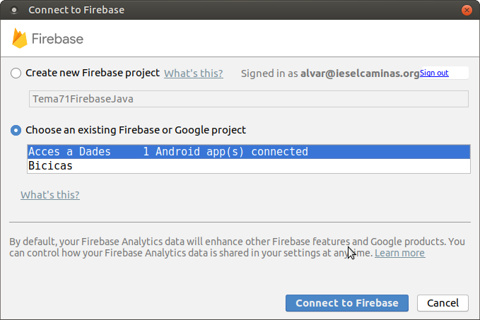

3.3.1 RD-Android: Connexió des d'Android
L'accés és extraordinàriament fàcil gràcies als assistents que ens proporciona el propi Android Studio.
Per a poder provar-lo ens crearem un projecte d'Android anomenat per exemple Tema7_FirebaseRD. Utilitzarem Kotlin, com sempre.
Al final de tot teniu un vídeo que repassa tots els passos per a poder connectar des de la nostra aplicació d'Android. L'exemple serà molt senzill, pràcticament ambA continuació els repassem i expliquem un a un. Són els que ens marca l'assistent, que haurem d'invocar sobre el nostre projecte ja creat, i que es crida des de Tools --> Firebase --> Realtime Database :
Connectar l'aplicació a Firebase
NOTA IMPORTANT
Podria donar-se el cas, depenent de la versió d'Android Studio (i altres coses, com que el projecte tinga errors i/o avisos) que done un error en apretar el botó de Connect to Firebase. I és que sembla que és molt delicat aquest assistent, i si hi ha qualsevol warning o error no deixa continuar:
Per a solucionar-lo, a banda de revisar si tenim algun error o avís, senzillament afegim al final del fitxer gradle.properties:
android.suppressUnsupportedCompileSdk=32En apretar el botó de Connect to Firebase, si no estàvem connectats amb el compte de Google al Firebase se'ns obrirà finestra d'un navegador per a connectar. Podria donar-se el cas que ens diguera que Android Studio vol accedir a les dades de la Base de Dades. Òbviament ho haurem de permetre:

Una vegada autenticats en Firebase, des de l'entorn d'Android Studio ens ofereix la possibilitat de crear una aplicació nova (una Base de Dades nova) o utilitzar alguna de les que ja tenim. Utilitzarem la que ens ha servit de prova fins el moment:

Quan haja connectat substituirà el botó Connect to Firebase, per una etiqueta que dirà connected, en verd.
Afegir la Base de Dades a la nostra aplicació
En aquest segon pas, quan apretem el botó Add the Realtime Database in your app, ens dirà els canvis que farà per a incorporar les coses necessàries per a poder connectar.
Com veieu es tracta d'incorporar les llibreries necessàries de Firebase. En el vídeo del final es mostren imatges amb les dades incorporades.
Igual que abans, substituirà el botó Add the Realtime Database in your app, per una etiqueta que dirà Dependencies set up correctly, en verd. És una bona guia per saber en quin punt estem.
Permetre l'accés als usuaris, si es precís canviant les regles d'accés a la Base de Dades
En versions anteriors de Firebase, per defecte les Bases de Dades (aplicacions) de Firebase estaven configurades per a que es connecten únicament usuaris autenticats. Això serà molt convenient en el futur, quan des del mòdul PMDM proveu l'autenticació d'usuaris. Però en l'última versió ens pregunta quan fem el primer accés si volem que es connecten usuaris autenticats, o si permetem que es connecte tot el món.
Sempre ho podrem modificar, i això es fa des de la Consola de Firebase de la Base de Dades, en la pestanya Rules. En el mòdul d'Accés a Dades permetrem l'accés a tot el món posant les dues propietats a true. Sabreu que ho heu posat de forma correcta quan els dos trues us apareguen en roig
Copiar les sentències per a escriure i per a llegir
Ens diu un exemple de les sentències a copiar per a poder guardar una informació a la Base de Dades i també per a detectar un canvi en la Base de Dades i poder obtenir el nou valor. Encara que tinguem un projecte en Kotlin, les sentències d'exemple seran de Java, però que en copiar-les les traduiria a Kotlin.
Marcarà alguns errors però que se solucionen important les classes (Alt-Enter), i algun altre fàcil de corregir
També marcarà un altre error de que no existeix la variable TAG. La creem al principi i ja està. El programa quedarà així
import androidx.appcompat.app.AppCompatActivity
import android.os.Bundle
import android.util.Log
import com.google.firebase.database.DataSnapshot
import com.google.firebase.database.DatabaseError
import com.google.firebase.database.ValueEventListener
import com.google.firebase.database.ktx.database
import com.google.firebase.ktx.Firebase
class MainActivity : AppCompatActivity() {
private val TAG = "MyActivity"
override fun onCreate(savedInstanceState: Bundle?) {
super.onCreate(savedInstanceState)
setContentView(R.layout.activity_main)
// Write a message to the database
val database = Firebase.database
val myRef = database.getReference("message")
myRef.setValue("Hello, World!")
// Read from the database
myRef.addValueEventListener(object: ValueEventListener {
override fun onDataChange(snapshot: DataSnapshot) {
// This method is called once with the initial value and again
// whenever data at this location is updated.
val value = snapshot.getValue()
Log.d(TAG, "Value is: " + value)
}
override fun onCancelled(error: DatabaseError) {
Log.w(TAG, "Failed to read value.", error.toException())
}
})
}
}Quan executem el programa, crearà la clau message amb el valor Hello, World!:
I si modifiquem aquesta clau des de la consola, quasi immediatament veurem en els log de Debug com hem arreplegat el valor, gràcies al Listener:
En el següent vídeo es veu tot el procés des del principi: